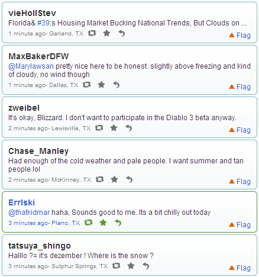

Twitter WeatherMap
ATL • DAL • DC • CHI • NYC • SF • SEA
Twitter Feed
The twitter feed produced can also be search and viewed . The objective is to view current weather based on Tweets from Twitter.
The twitter feed produced can also be search and viewed . The objective is to view current weather based on Tweets from Twitter.